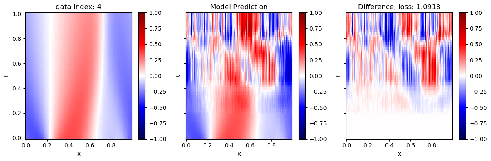
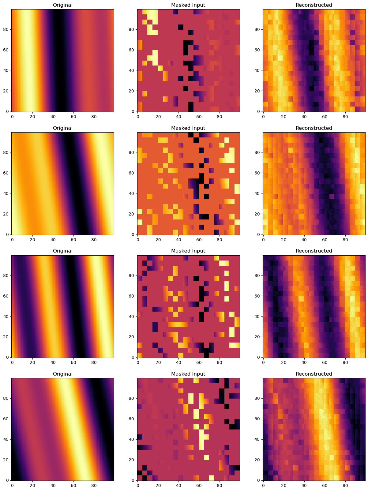
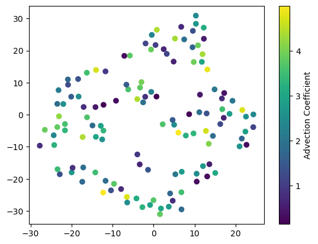
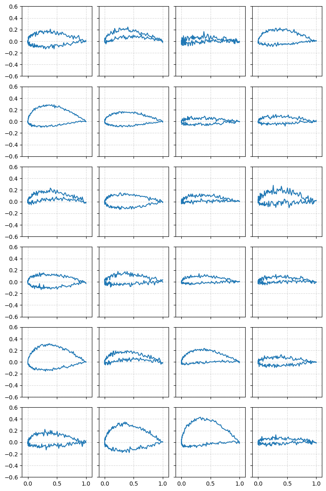

AI & Machine Learning
From Classical Models → Deep Learning → Real-World Engineering Applications
I didn't start with neural networks. I started with understanding why models work — gradient descent on a logistic regression, the geometry of support vectors, the math behind decision trees. That foundation made everything that came after stick. This page traces that arc: from implementing ML from scratch in coursework, to training deep learning models on engineering datasets, to exploring ML/AI models for predicting human intent for prosthetic leg control in my current research.
The Learning Arc
Machine Learning & AI for Engineers covered 13 modules of classical and modern ML — from linear models to sequence models. Every algorithm was implemented from scratch before using a library. Representative topics:
Foundations
Linear regression, gradient descent, bias-variance tradeoff, cross-validation. Implemented everything from numpy arrays up.
Classification
Logistic regression, polynomial feature mapping, nonlinear decision boundaries. Built gradient descent optimizer by hand.
SVMs & Trees
Soft-margin SVM via quadratic programming, decision trees, random forests, ensemble methods.
Neural Networks
MLP backpropagation from scratch, regularization, batch normalization. Applied to classification tasks.
Sequence Models
RNNs, LSTMs, GRUs for time-series prediction. Attention mechanisms and positional encoding.
Probabilistic Models
Bayesian inference, variational methods, unsupervised learning. Final project synthesis applying models to engineering data.
Coursework Highlights — ML & AI for Engineers
Selected assignments from the 13-module general AI/ML course. Each algorithm implemented from scratch before using a library.
Logistic Regression + Polynomial Feature Mapping
Projectile hit/miss classification with a nonlinear decision boundary. Built a feature map expanding 2D inputs to 45 features via 8th-order polynomial terms, then trained with gradient descent from scratch.
Result: >95% classification accuracy on held-out test set
Soft Margin SVM via Quadratic Programming
Implemented a soft-margin SVM by directly solving the QP dual problem with cvxopt. Manually constructed the P, q, G, h constraint matrices; swept regularization parameter C to observe the hard-margin vs. soft-margin trade-off.
QP solved directly — no sklearn SVC wrapper
Decision Tree vs Random Forest
Trained and compared a depth-10 decision tree against a 100-estimator random forest on the UCI Cylinder Bands dataset — 39 features, binary classification. Analyzed why bootstrap aggregation reduces variance: decorrelated trees average out individual biases.
Random Forest: measurably higher generalization vs. single tree
Backpropagation from Scratch
Fully-connected network with manual backpropagation — chain rule by hand, no autograd. Added batch normalization and dropout; verified correctness numerically with gradient checking.
Gradient check: numerical ≈ analytical to within 1e-7
Sequence Models: RNNs, LSTMs, Attention
Implemented vanilla RNN backpropagation through time, then LSTM with all four gate equations from scratch. Studied vanishing gradients experimentally — recorded gradient norms across sequence depths 10, 50, 100. Also implemented scaled dot-product attention.
Gradient norms visualized across depths — collapse point confirmed
Anatomical Landmark Detection on X-Ray Images
Applied supervised learning to medical image data — predicting the pixel location of anatomical landmarks (joint midpoints) from X-ray images. Annotated training data through a custom labeling pipeline, then trained and evaluated a regression model across multiple cross-validation folds.
Representative per-image errors ranged from 7–17 px, consistent with the ambiguity in landmark definition on radiographs.
Cross-fold evaluation on multi-view X-ray dataset
Turbofan RUL: GRU vs Embed-RUL
Compared a baseline GRU (RMSE 13.17 on FD001) against an Embed-RUL encoder-decoder autoencoder on the NASA C-MAPSS dataset. The key result from Embed-RUL: the encoder learned to separate healthy from degraded engine embeddings without any RUL labels — purely from reconstruction loss.
t-SNE of the learned embedding space confirmed clean separation of normal vs. degraded engine states. S-scores (asymmetric scoring) favored the GRU for accuracy but Embed-RUL provided interpretable health trajectories useful for safety-critical monitoring.
Embed-RUL: unsupervised health representation · GRU RMSE 13.17
Course Highlight Figures
Selected outputs from the general ML/AI course assignments.
.png)
.png)


Deep Learning — A Separate Course
AI & Machine Learning and Deep Learning are two distinct graduate courses taken in consecutive semesters at CMU. The AI/ML course (above) covers classical foundations through sequence models and generative basics. Deep Learning goes deeper: the three capstone homeworks below each required implementing a non-trivial architecture from scratch and applying it to a PDE or engineering dataset.
Decoder-Only Transformer for the 1D Burgers PDE
Implemented scaled dot-product attention in NumPy, then built a full decoder-only transformer in PyTorch to solve the 1D Burgers equation — a nonlinear PDE that develops sharp shock discontinuities. The model autoregressively generates the solution field one time step at a time, conditioned on previous solution values.
Key implementation: causal masking prevents the model from attending to future time steps during autoregressive generation. Positional encodings encode the spatial grid. Trained with MSE loss against ground-truth numerical solutions.
Architecture: Decoder-only transformer · Numpy attention kernel · PyTorch training
Masked Autoencoder (ViT) for 1D Advection PDE
Implemented a Masked Autoencoder (MAE) with a Vision Transformer encoder and lightweight decoder for self-supervised learning on the 1D Advection equation. During training, 75% of input patches are masked; the model learns to reconstruct the missing solution field.
The t-SNE visualization of learned latent embeddings reveals that the model self-organizes by wave speed without ever seeing wave speed labels — purely from reconstruction loss. Validation MSE = 0.0409 (target threshold < 0.05, achieves full marks).
Valid MSE = 0.0409 · Latent space self-organizes by wave speed
β-VAE on the UIUC Airfoil Database
Trained a β-Variational Autoencoder on the UIUC airfoil shape database. The encoder maps airfoil coordinates to a Gaussian latent distribution; the decoder reconstructs (or generates) aerodynamic profiles. The β coefficient controls the KL divergence weight in the ELBO loss, trading reconstruction fidelity for disentanglement.
By sampling from the learned latent space, the model generates novel aerodynamic profiles — smooth, physically plausible airfoil shapes not present in the training set. The reparameterization trick enables end-to-end gradient flow through the stochastic sampling.
Generates novel aerodynamic profiles · ELBO = reconstruction + β·KL
Example Works — Selected Figures from Deep Learning Assignments
Figures below are extracted directly from the homework notebooks. All implementations are independent coursework.




Applied to Real Problems
Beyond coursework, I've applied ML methods to engineering domains that I care about — starting with turbofan RUL prediction and extending into human gait analysis. Both are harder than clean benchmark datasets: real-world noise, inter-subject variability, and stakes that matter.
Foot Placement Prediction (Current RA Research)
My current research at CMU explores ML/AI models for predicting human intent for prosthetic leg control — specifically predicting where the foot will land before it does, from a single heel-mounted IMU. Unlike clean benchmark datasets, gait data is messy: sensor drift, inter-subject variability, and tight latency constraints for embedded deployment.
The current evaluation uses a Bayesian sequential framework, but the active direction is benchmarking this against learned approaches — LSTMs, temporal CNNs — and exploring whether intent can be detected from hip-only sensing rather than a foot-mounted sensor.
Current results: Real-time evaluation on 108 over-ground walking steps from a live heel-mounted HWT906 IMU (100 Hz, <10 ms per-step inference) achieves RMSE|d| = 29.3 cm, with predictions issued 376 ms before heel-strike — more than 2× the prosthetic ankle actuation budget. Subject-specific IMU training on free-walking data reduces placement error by 46% over out-of-domain motion-capture models.
→ Read the full prosthetics research page for the complete framework, dataset description, per-trial results, and active exploration directions.
What This Builds Toward
The thread across all of this work is the same: building models that are right for their domain, not just models that score well on a benchmark. A GRU that achieves RMSE 13 on FD001 is impressive — until you realize it fails completely on FD002. A Bayesian model that gives uncertain predictions on a hard case is more useful than a neural network that confidently outputs the wrong answer.
I want to keep working at the intersection of ML and physical systems — where models have to interact with sensors, bodies, and environments that don't cooperate. The engineering constraints make the problems harder and the solutions more meaningful.